DS-C1 · The CAP Theorem. Availability, Consistency, Failure in Distributed SystemsAndrea Omicini — DISI, Univ. BolognaA.Y. 2025/2026
In this lesson
Understand failure, availability, and consistency in distributed systems
State the CAP theorem (Brewer, 2000) and what it means for shared-data systems
See why partition tolerance is rarely optional in real-world systems
Walk through the Gilbert & Lynch proof step by step
Explore the Pokemon Go architecture on Google Cloud as a CAP case study
Understand the ACID vs. BASE tradeoff and modern cloud-data approaches
Recognise what an impossibility result teaches us about engineering boundaries
1. Availability, Consistency, Failure
Distributed systems promise something that centralised systems cannot: the ability to keep working even when parts break. If one server crashes, another takes over. If a network link goes down, traffic is rerouted. This is the intuitive promise — and it is why we build distributed systems in the first place.
Distribution also introduces limits. The CAP theorem, conjectured by Eric Brewer in 2000 and proved by Seth Gilbert and Nancy Lynch in 2002, concerns a read/write service whose live nodes may be unable to communicate. Under this failure model, no implementation can guarantee both a linearizable history and eventual completion of every request at every non-failing node in every admissible execution. Sections 6–13 give the definitions and a concrete counterexample.
Key idea
The CAP theorem is not about what is desirable but about what is possible. It sets a hard boundary on the design space of distributed systems.
2. Hiding Failure in Distributed Systems
A central motivation for distribution is the ability to mask failures. As Friedman and Birman (1996) observed, "being able to keep on providing services in spite of failures is supposed to be one of the main benefits of distributed systems over centralised ones." The idea is intuitive: if one component fails or becomes disconnected, another component replaces it, and the outside world never notices.
When a system can hide most of its failures, it appears to be always working — we call it highly available. The key question for system designers becomes: how much failure can a given system sustain before the failure becomes visible to the user?
The examiner will ask
"What is the relationship between failure masking and availability? Can you give an example where a system fails but a user does not notice?"
3. What We Expect from a Distributed System
Gilbert and Lynch (2012) frame our expectations in terms of two classic properties from concurrent and distributed computing:
Property
Safety / Liveness
Meaning
Consistency
Safety
We want correct behaviour: the system returns the right answer. A read after a write returns the value of that write (or a later one).
Availability
Liveness
We want the system to do something: every request to a non-failing node gets a response. The system stays live and responsive.
However, real systems experience power losses, crashes, network failures, message loss, malicious attacks, and Byzantine failures. The environment is unreliable. The tension between what we want (correctness and responsiveness) and the environment we have (unreliable and unpredictable) is the central problem of distributed systems design.
4. Safety vs. Liveness: The Deeper Tradeoff
Gilbert and Lynch (2012) place the CAP theorem in a broader context: "The CAP theorem is one example of a more general tradeoff between safety and liveness in unreliable systems."
Safety rules out bad histories: for a linearizable register, each operation must fit a legal sequential order that respects real-time precedence. A read overlapping a write may return the old value; “old” alone does not establish a violation. Liveness requires progress: here, every request received by a non-failing node must eventually complete.
Safety and liveness do not always conflict in unreliable systems. Impossibility results identify specific combinations of properties and failure assumptions that cannot be guaranteed together. CAP is one such result, not a universal ban on correct, live distributed algorithms.
Editor's note
This framing is powerful: FLP impossibility, consensus lower bounds, and many other distributed-systems impossibility results can be understood as specific instances of the safety-liveness tension under asynchrony.
5. CAP at a Glance
If the network may prevent communication between live nodes, a replicated read/write service cannot guarantee both linearizability and completion of every request at every non-failing node in all admissible executions. A partition is part of the failure model, not a third feature that a UI can switch off.
The familiar “pick two” slogan hides the conditions. Different operations can use different policies; a healthy execution may provide both C and A, but that does not establish the same guarantees under arbitrary partitions.
6. The CAP Theorem Formally
Term
Meaning in the theorem
C: linearizability
Each operation appears to take effect between its invocation and response. The resulting sequential register history must respect real-time precedence between non-overlapping operations.
A: availability
Every operation received at a non-failing service node eventually completes with a result permitted by the chosen object specification. The definition has no fixed response-time bound; an error instead of performing a valid read/write is not a loophole.
P: partitions admitted
The guarantees are required even when communication across components can fail indefinitely. Client operations can still reach a live node in each component.
C is not equality of every internal replica at every instant, and A is not an uptime percentage or guaranteed inter-server message delivery. The asynchronous theorem rules out simultaneous C and A over all fair executions in this failure model. Gilbert and Lynch, 2002, §§2–3.
7. Why “Pick Two” Misleads
Situation or policy
Consequence
Communication eventually succeeds
An appropriate protocol can provide linearizable operations and eventual completion. This is not proof that every deployed system automatically does so.
Preserve linearizability during a partition
Some operations may wait or be refused. Not every live node can promise successful completion of every valid operation.
Serve operations independently
Both components may finish requests, but some histories violate linearizability. Weaker consistency still needs a specified protocol.
Engineering offers different consistency models and measured service levels; the formal C and A properties above are specific predicates, not sliders. Assuming away partitions changes the executions covered by a guarantee. It does not make a real network failure disappear.
8. Interactive: Operations Across a Partition
Both nodes are alive; G1 completed write(1) before the read at G2 begins. The arrows describe alternative policies and their consequences, not messages crossing the broken link. In this particular example, local reads finish with stale 0; authority reads wait for a reply. A finite wait alone is not a liveness violation: the availability failure follows if the required communication is prevented forever.
The experiment requires JavaScript. The diagram and six static traces below remain available without it.
The model has two live nodes, a single writer at G1 and one read at G2. It is not a production database, a quorum protocol or a general multi-writer reconciliation algorithm. Event numbers come from the external observer, not synchronized clocks available to the nodes.
9. Location-Based Games: A CAP Lens
Location-based games — BotFighters, GeoZombie, Ingress, Pokemon Go, Harry Potter: Wizards Unite, Minecraft Earth — are an excellent real-world illustration of CAP tradeoffs. They share a characteristic architecture: millions of mobile players moving through physical space, with game state that depends on location.
Partition tolerance is non-negotiable
Mobile devices are inherently unstable in network connectivity. Players move in and out of coverage. Players concentrate in some areas (special events) and are sparse in others. Scalability is multi-level: not just total player count, but the number of distinct locations and the density of players at each location.
Evidence limit
The slides use the Chicago 2017 Pokemon Go Fest as an example of connectivity and capacity problems. This is not evidence that a particular CAP policy caused the outage: overload, client connectivity and the service's actual replication protocol must be distinguished.
Consistency and availability tension
Game data consistency (goals, achievements, items) is essential to keep players engaged. Location-based games typically use logically-centralised architectures with spatial replication to reduce latency and improve scalability. When strong consistency is required — e.g., for in-game transactions — players may have to wait for servers to confirm the operation. The first casualty is availability: the spinning wheel of death.
10. Case Study: Pokemon Go on Google Cloud
The following is the historical Google Cloud architecture example reproduced in the course slides, not a claim about Pokemon Go's current deployment. It illustrates different data paths; component names alone do not establish their guarantees under partitions.
1. Content delivery: When a player opens the app, all static media are downloaded from Cloud Storage via Cloud CDN, using Google's global edge network for low-latency delivery.
2. Request routing: Player requests go to an NGINX reverse proxy, which routes them to the Frontend game service hosted on Google Kubernetes Engine (GKE).
3. Spatial backend: The Spatial Query Backend handles location-based features with a cache sharded by location. It decides which Pokemon appear on the map, which gyms and Pokestops are nearby, and which time zone applies.
4. Strong consistency for writes: When a player catches a Pokemon, the Frontend (GKE) sends a write event to Google Spanner — a strongly consistent, globally replicated database. The player waits for the write to complete before getting a response.
5. Logging and analytics: Every player action is recorded in Bigtable (NoSQL) as a Protobuf representation for logging and tracking. It is also published to a Pub/Sub topic for the analysis pipeline.
6. Regional sync: Multiple players in the same geographical region are kept in sync through deterministic map rendering. Even on different machines, same-location players get the same inputs.
7. Shared world: All servers synchronise settings changes and event timings, so players feel they share a consistent world.
The useful design question is which guarantees each operation needs. The slide architecture does not establish that Bigtable or a spatial cache is universally “AP”, or that every use of Spanner has identical failure behavior. Such claims require the replication configuration, request routing, consistency mode and failure assumptions. A product diagram is not a proof of availability or linearizability.
11. Back to CAP: Definitions for a Proof
For a register initially equal to 0, a read invoked after write(1) has completed must return 1 if there are no other writes. A read overlapping that write may return 0 or 1, if an order consistent with its operation interval exists. Returning 0 is therefore not automatically a violation: the invocation and response events matter.
CAP consistency is linearizability of the object history. ACID consistency concerns preservation of database invariants; transaction isolation is a separate property. Neither “ACID” nor equality of two cached values by itself establishes linearizability.
Availability concerns requests that reached a non-failing service node. It does not promise that a message sent by another server reaches it. The proof admits a network execution with no cross-component delivery while both nodes keep taking local steps.
The original slides 26–28 use shorthand about responses and message delivery. The model here separates the client operation from the protocol messages used to answer it.
12. The Theorem and Its Proof
Assume a read/write register can provide both linearizability and availability in every fair asynchronous execution, including a permanent partition between non-empty G1 and G2. Initially its value is 0.
Consider E0: there is no write, and a client reads at G2. Availability requires a response; the register specification forces 0.
Consider E1: a client writes 1 at G1. Availability requires that write to finish despite the partition. Only after its response does a client invoke the same read at G2.
No message about the write reaches G2. Choose the same local steps and observations for G2 as in E0: it cannot distinguish these executions and must give the same response, 0.
In E1, the completed write precedes the read invocation. Linearizability requires 1, contradicting that response.
The no-write comparison is essential: the argument is not simply that every algorithm reads its local cache. A protocol can preserve linearizability by leaving some operation pending, but then it cannot guarantee availability if the required communication never resumes.

Reasoning diagram, not a network-message trace. E0 forces a read of the initial value 0. In E1, the write completes before the read begins, but G2 receives no information about it and has the same local observations as in E0. The availability assumption forces a response in both executions; the identical 0 response in E1 violates real-time ordering. The numeric example uses one register and no other writes.
13. Reproducible Operation Histories
These traces are generated by the same model as the interactive experiment. The first two agree in G2’s local observations before healing, despite the hidden write in one execution. The overlap examples explain why comparing cached values is not a linearizability test. A pending read can be omitted from a safety check of the completed history; its termination must be checked separately.
No write: read returns the initial value
Policy: serve the local copy. One observer action per row. “Pending” is not a completed read; a completed stale response remains part of the history after healing. Scroll horizontally when needed.
No write: read returns the initial value
Action
G1 / G2 cache
Read result
Linearizable history?
partition
0 / 0
not invoked
yes
read
0 / 0
0
yes
Completed write, then local read: violation persists after healing
Policy: serve the local copy. One observer action per row. “Pending” is not a completed read; a completed stale response remains part of the history after healing. Scroll horizontally when needed.
Completed write, then local read: violation persists after healing
Action
G1 / G2 cache
Read result
Linearizable history?
partition
0 / 0
not invoked
yes
write
1 / 0
not invoked
yes
read
1 / 0
0
no
heal
1 / 0
0
no
deliver
1 / 1
0
no
Authority read: pending during partition, then returns 1
Policy: consult G1. One observer action per row. “Pending” is not a completed read; a completed stale response remains part of the history after healing. Scroll horizontally when needed.
Authority read: pending during partition, then returns 1
Action
G1 / G2 cache
Read result
Linearizable history?
partition
0 / 0
not invoked
yes
write
1 / 0
not invoked
yes
read
1 / 0
pending
yes
heal
1 / 0
pending
yes
deliver
1 / 0
pending
yes
deliver
1 / 0
1
yes
Local read completes before the write: returning 0 is valid
Policy: serve the local copy. One observer action per row. “Pending” is not a completed read; a completed stale response remains part of the history after healing. Scroll horizontally when needed.
Local read completes before the write: returning 0 is valid
Action
G1 / G2 cache
Read result
Linearizable history?
partition
0 / 0
not invoked
yes
read
0 / 0
0
yes
write
1 / 0
0
yes
Read overlaps the write: a delayed reply containing 0 is valid
Policy: consult G1. One observer action per row. “Pending” is not a completed read; a completed stale response remains part of the history after healing. Scroll horizontally when needed.
Read overlaps the write: a delayed reply containing 0 is valid
Action
G1 / G2 cache
Read result
Linearizable history?
read
0 / 0
pending
yes
deliver
0 / 0
pending
yes
write
1 / 0
pending
yes
deliver
1 / 0
0
yes
Read overlaps the write: consulting the authority later returns 1
Policy: consult G1. One observer action per row. “Pending” is not a completed read; a completed stale response remains part of the history after healing. Scroll horizontally when needed.
Read overlaps the write: consulting the authority later returns 1
Action
G1 / G2 cache
Read result
Linearizable history?
read
0 / 0
pending
yes
write
1 / 0
pending
yes
deliver
1 / 0
pending
yes
deliver
1 / 0
1
yes
14. Building on an Impossibility Result
An impossibility result like CAP might seem discouraging. "Should we stop distributing computational systems?" the slides ask — "in the same way we stopped using axiomatic systems after Godel?"
The answer is clearly no. Negative results set boundaries and reveal the limits of our reach. Understanding what is impossible is what makes good engineering possible: it tells us which tradeoffs are inherent and which are merely accidental. An impossibility result from computer science becomes a guide for engineering methods and practices.
Key insight
CAP identifies an incompatible set of guarantees under a stated failure model. Choose operation-specific behavior during communication failures and specify what recovery can actually restore.
15. Partition-Aware Design and Recovery
A service can choose policies per operation and plan recovery, rather than adopt one universal two-letter label. In an asynchronous system, however, a timeout does not prove that a link is partitioned: a message may simply be slow. Policies must remain safe under mistaken suspicions. Brewer’s 2012 retrospective.
Stage
Design obligation
Normal communication
Implement the promised operation semantics; connectivity alone does not synchronize replicas.
Missing communication
Decide which operations may wait and which may proceed under explicitly weaker guarantees.
Recovery
Deliver retained updates, reconcile conflicts according to a defined rule, and restore invariants where possible. Previously returned responses cannot be erased from the operation history.
In the one-writer example, copying G1’s value to G2 restores equality after healing. It does not make the earlier completed write(1) → read(0) history linearizable. General multi-writer recovery requires additional conflict and application semantics.
16. ACID vs. BASE: Different Questions
Atomicity is all-or-nothing transaction execution; consistency is preservation of database invariants; isolation specifies permitted interactions between concurrent transactions; durability concerns committed data surviving the stated failures. The acronym alone does not specify a linearizable API or the isolation level.
BASE is an engineering mnemonic: Basically Available, Soft State, Eventually Consistent. It is not a formal proof of availability. Soft state does not imply that all application data is ephemeral; eventual convergence requires assumptions about delivery, updates and reconciliation.
These are not mutually exclusive product categories. Local transactions may preserve invariants even when cross-component operations use weaker guarantees. Neither acronym defeats the CAP theorem or by itself selects a database for an application.
17. Cloud APIs: Specify the Operation
Product names are not consistency specifications. Check the operation, region, index and replication mode. The following documentation checks are current as of 7 September 2026:
Amazon S3: strong read-after-write consistency covers object PUT/DELETE and subsequent reads, including overwrites. This is not the old claim that ordinary object reads are eventually consistent, nor a claim about every cross-region workflow. S3 consistency model.
DynamoDB: eventually consistent reads are the default; supported table and local-secondary-index reads can request strong consistency. Global secondary indexes and streams do not support that read option. Describing writes as “eventually consistent by default” confuses reads, successful writes and replication. Global-table modes require their own specification. DynamoDB read consistency.
Latency, cost and consistency choices are related engineering concerns, but are not the CAP impossibility statement itself. Version vectors, caches or logical clocks alone do not prove convergence or make stale responses disappear. The theorem remains valid under its assumptions.
18. State Explorer: Consistency vs. Availability Tradeoff
This is a conceptual policy map, not an executable replication protocol or a perfect partition detector. Its transitions summarize design choices and recovery obligations. The operation model in section 8 separately demonstrates actual reads, writes and delayed messages.
19. Lessons Learnt
The CAP theorem is a cornerstone of distributed systems theory. The key takeaways:
In the design and development of distributed systems, we must typically choose between a responsive system and a fully-consistent one when the network fails.
We can leverage CAP to design systems with different features depending on system status — partition-aware design turns an impossibility result into an engineering strategy.
ACID and BASE describe different engineering concerns; neither acronym proves the formal CAP guarantees. Weaker consistency requires explicit assumptions and application-level handling of its consequences.
The CAP theorem, like all impossibility results in computer science, does not paralyse us — it informs our engineering choices and helps us understand the fundamental boundaries of what distributed systems can achieve.
Brewer (2012), paraphrased
Design useful guarantees for particular operations, including what happens during communication failures and how the application recovers afterward. A fixed two-letter label omits these important choices.
Check Your Understanding
1. State the CAP theorem precisely. Why is it an impossibility result?
In the asynchronous read/write-object model allowing arbitrary cross-node message loss, no implementation can guarantee linearizability and eventual completion of every request at every non-failing node in all fair executions. This is a limit under specified assumptions, not a statement that all distributed services fail.
2. How do CAP consistency and ACID consistency differ?
Linearizability places each operation at its own conceptual instant between invocation and response, preserving real-time precedence and the sequential object specification. ACID consistency concerns database invariants; isolation is a separate transaction property. Equal cached values alone do not establish a legal operation history.
3. Why must the failure model say whether partitions are allowed?
Excluding partitions restricts the executions for which guarantees are promised; it does not prevent network failures in deployment. If arbitrary partitions are admitted, C and A cannot both be guaranteed in all executions. A service may preserve safety while particular requests remain pending.
4. What comparison makes the CAP proof work?
Compare E0, where G2 reads with no write anywhere, with E1, where G1 first completes write(1) and then G2 invokes its read. No cross-partition messages arrive. In E0 the completed read must return the initial 0. G2 has the same local observations in E1, so it returns 0 there too, contradicting the completed-write-before-read order. Availability forces both operations to finish; a node that waits forever avoids the safety violation but not the liveness failure.
5. What can the Pokemon Go architecture example establish?
It illustrates separate paths for transactions, cached spatial data and analytics. Product names and a wiring diagram do not prove a universal CP/AP classification. The actual operation, routing, replication configuration and failure model are needed to assess guarantees.
6. What is BASE, and what does it not prove?
Basically Available, Soft State, Eventually Consistent is an engineering mnemonic. Eventual convergence needs assumptions about delivery, updates and reconciliation; it does not undo an already returned stale response. BASE is not a formal availability proof and does not imply all stored data is temporary.
7. Is formal CAP availability the same as an uptime or latency target?
No. Here availability requires eventual completion of every request at a non-failing node, without a fixed deadline. An SLA measures different operational goals. One finite pending request is not a proof of nontermination, and a successful finite trace does not prove availability for every execution.
8. What does partition-aware recovery require?
Specify which operations may proceed without coordination and how their effects are handled afterward. A timeout is a suspicion, not certain knowledge of a partition. Reconciliation may restore future convergence, but cannot erase a completed stale read from the history.